Neriadené
Pretláčanie / podtunelovanie
- Priemer
- Ø 50 – 160 mm
- Dĺžka
- do 20 m
Pod komunikáciami a chodníkmi.
SedíLíniové stavby · zemné práce · podvŕtavanie
Výkopové, zemné a búracie práce, terénne úpravy a podvŕtavanie spevnených plôch. Od roku 1997 pracujeme pre stavebníkov, firmy aj správcov sietí.
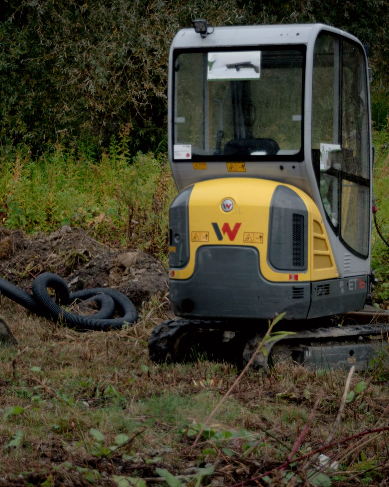
O nás
Spoločnosť sme založili v roku 1997 v prvom rade preto, aby sme boli nápomocní pri práci odborníkov v oblasti telekomunikácií. V roku 2000 sme činnosť rozšírili o stavebný priemysel, aby sme pomáhali aj odborníkom v iných oblastiach.
Kvalitu služieb neustále zlepšujeme a naším hlavným cieľom je spokojnosť klientov. Výkopy, búranie, terénne úpravy aj podvŕtanie robíme vlastnou technikou a postaráme sa aj o papiere: vyjadrenia, rozkopávkové povolenia a vytýčenie sietí.
„Poteší nás, ak aj Vy využijete naše služby a budeme Vám môcť dokázať, že sa na nás môžete spoľahnúť.“
Služby
Strojové práce robíme minirýpadlami a rýpadlo-nakladačmi od 2 do 8 ton. Kde sa so strojom nedá, kopeme ručne.
Strojové aj ručné výkopy. Prípravné práce pre stavby, výkop základov budov a plotov.
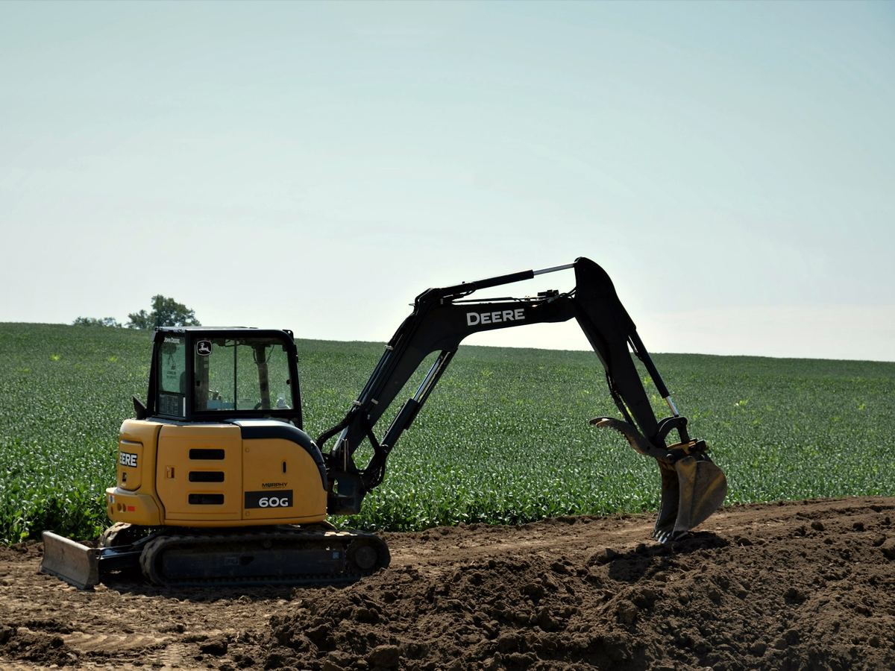
Výkop pre prípojky vody, kanalizácie, elektriny a plynu, pre žumpy aj bazény.
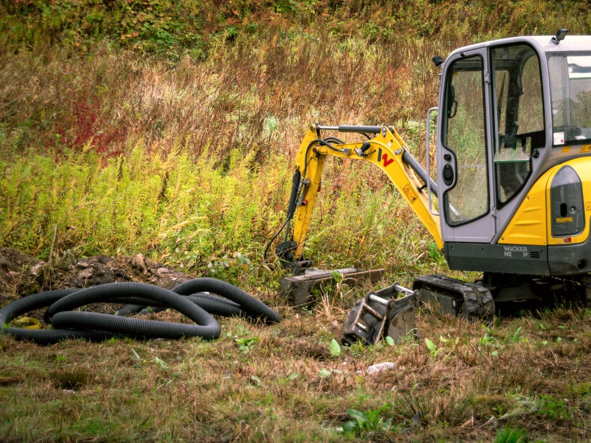
Výkopy pre káblové a potrubné trasy. Začínali sme v roku 1997 pri telekomunikáciách.
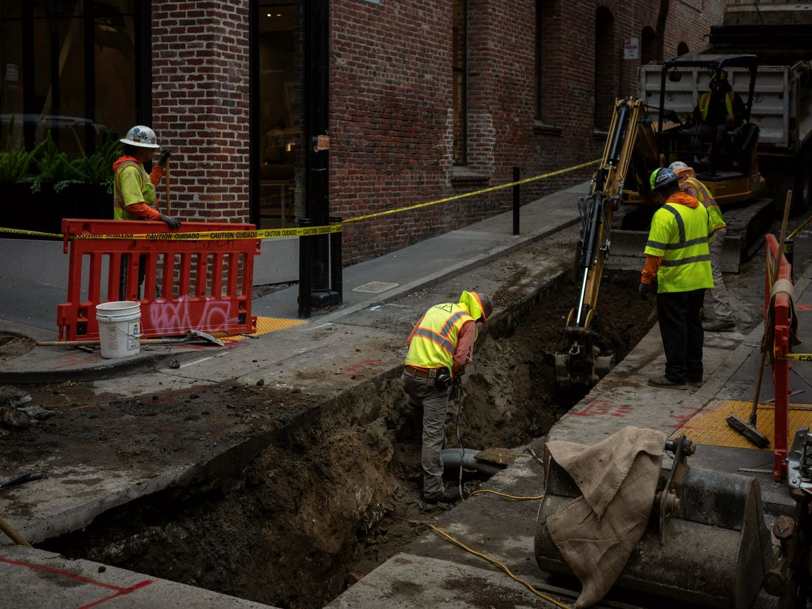
Likvidácia spevnených plôch a búranie menších stavebných objektov, s odvozom stavebnej sute na skládku.
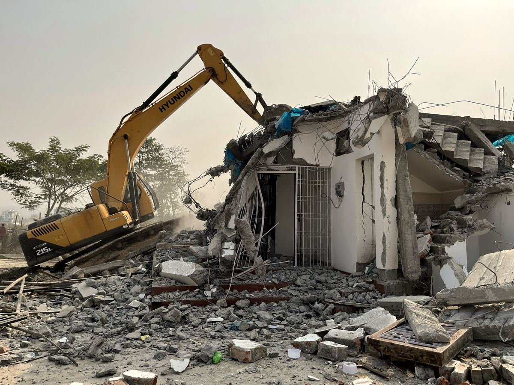
Čisté rezy do spevnených plôch pred výkopom alebo búraním.
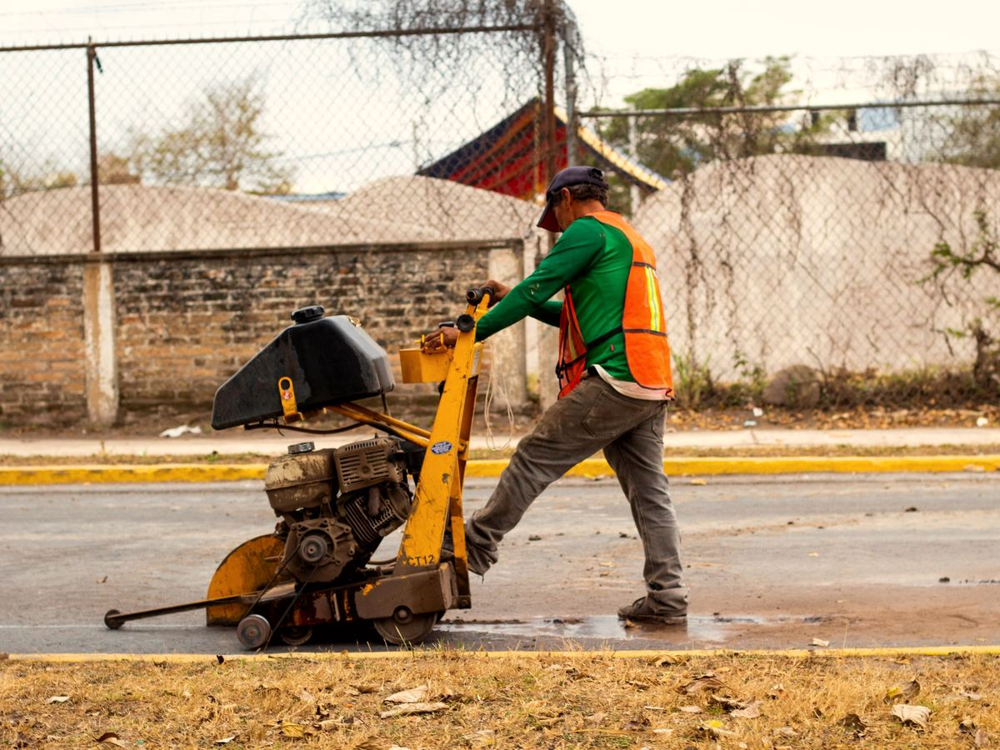
Čistenie a planírovanie pozemku, odvoz prebytočnej zeminy, preprava sypkých materiálov.
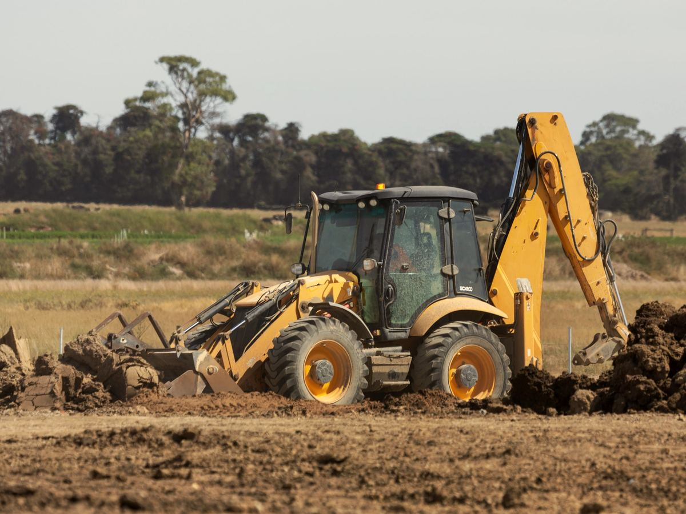
Konečné terénne úpravy, zhutnenie zeminy, betonárske a asfaltérske práce.
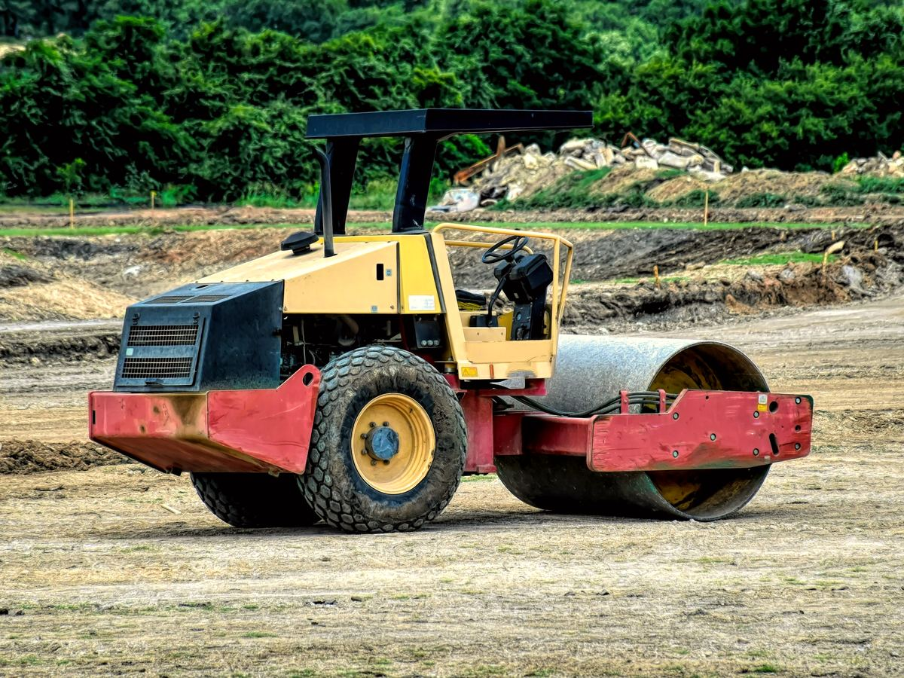
Pretláčanie a mikrotunelovanie pod cestami, chodníkmi a vodnými tokmi, bez rozkopania povrchu.
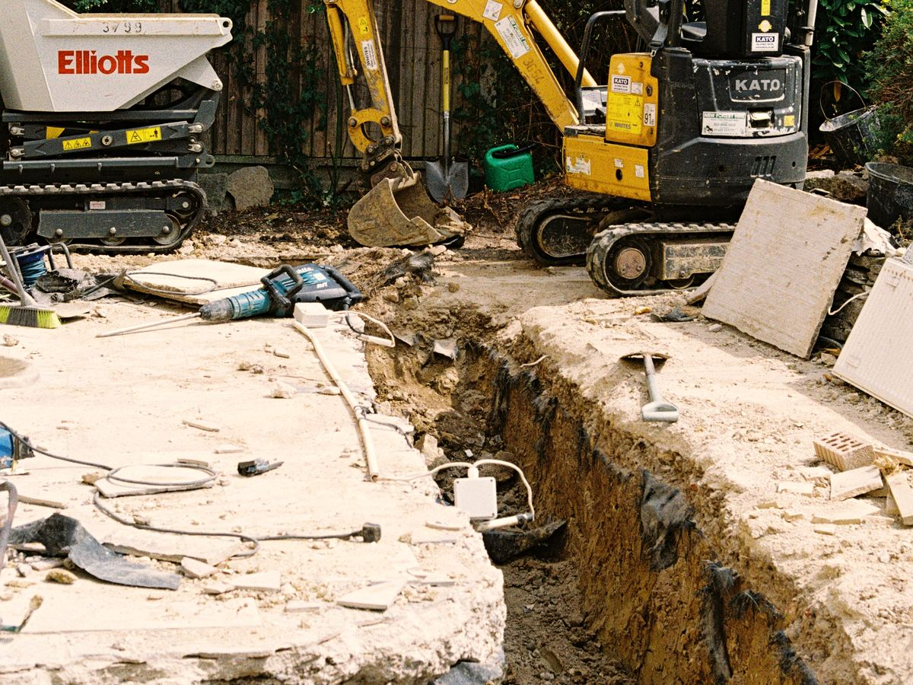
Vyjadrenia a rozkopávkové povolenia, vytýčenie podzemných sietí a poradenstvo.
Podvŕtavanie spevnených plôch
Novú prípojku či chráničku dostaneme na druhú stranu cesty, chodníka alebo vodného toku bez toho, aby sa povrch rozkopal. Pozrite sa, ako to prebieha.
Najprv zistíme, ktoré podzemné siete pod plochou vedú, a dáme ich fyzicky vytýčiť. Vyjadrenia aj rozkopávkové povolenie vybavíme za Vás.
Štartovaciu a cieľovú jamu vykopeme mimo cesty alebo chodníka. Spevnená plocha medzi nimi ostáva nedotknutá.
Pod povrchom pretlačíme otvor neriadene do 20 m, alebo riadeným mikrotunelovaním až do 400 m, aj popod vodný tok.
Otvorom prejde chránička alebo rúra: Ø 50 – 160 mm pri pretláčaní, Ø 110 – 250 mm pri mikrotunelovaní.
Jamy zasypeme, zeminu zhutníme a povrch upravíme. Cesta ani chodník sa nerozkopali.
Ktorá metóda pre Váš prechod?
Neriadené
Pod komunikáciami a chodníkmi.
SedíRiadené
Pod komunikáciami, vodnými tokmi aj inými objektmi.
Sedí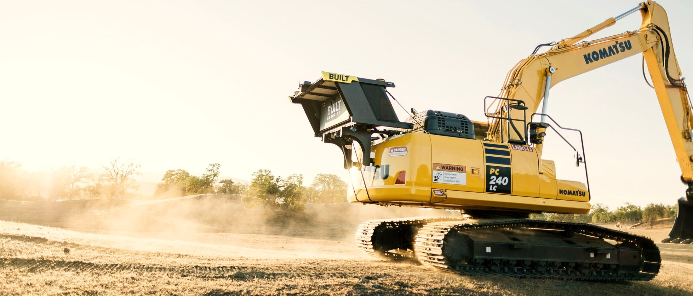
Strojové aj ručné výkopy.
Od základov plotu po prípojku spod cesty.
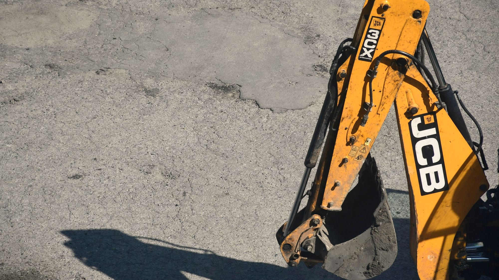
Pracujeme s technikou
Inžinierska činnosť
Skôr než sa kopne do zeme, treba vedieť, čo je pod ňou, a mať na rozkopávku povolenie. Celé to za Vás vybavíme, alebo Vám aspoň poradíme, ako na to.
Oni nám veria
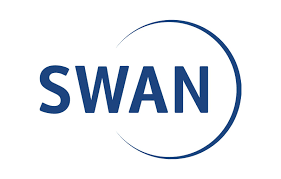
Kontakt
pondelok – piatok
8:00 – 16:00
Štúrovo a okolie, okresy Nové Zámky, Komárno, Levice, Nitra, Galanta a Šaľa